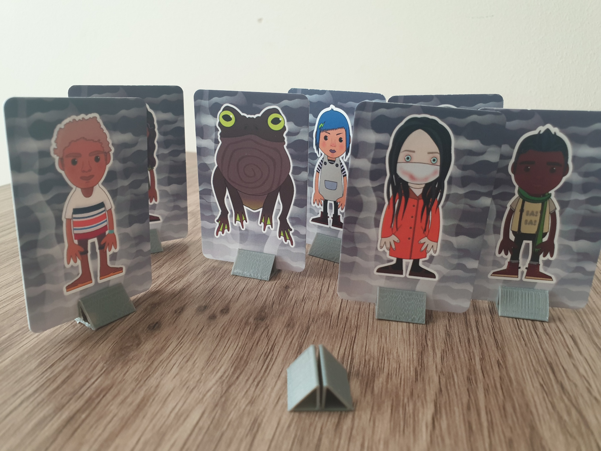

3DPrint Game Card Stand

Card stands like these seem hard to buy if you want a certain size or shape or color. Mostly there seems to only be one style available at a reasonable price at any one time. So I just made one I could print and tweak :)
This has a V shaped crevice the bottom part of which clamps and holds onto playing cards. You might need to tweak this blend file as I just did it by trial and error with the minimum distance apart I could get away with printing before it stuck together and that took a fair few tries.

It should print OK without any supports and in batches as it is laying on its side with each layer exactly the same.
I've included a gcode as how its sliced is pretty important for the grip and fit. This works with my default ender 3 pro and generic PLA.
3DPrint Catball feeder
I have been using a device like this for a few years now, it reduces the ability of the cat to inhale treats. Sure it sounds a bit like the ghost of Christmas past rattling chains and dragging weights across the hard floor but it is still better than the cat screaming at you for more treats five seconds after you just gave them some.
So this is a 3dprinter recreation of the same sort of device, we have a ball cavity to fill with treats and a couple of holes to let them out slowly with enough vigorous rolling. The simple large screw thread lets you open and lock the ball and works quite well, it has survived cat and foot abuse without separating. So you simply open ( using the holes as a grip point ) scoop some treats into the half with no holes and then screw it closed again.
Ideally you want a treat similar in size and shape to a "Dreamies" cat treat, the hole is scientifically designed and tested so that such a shaped treat can only fall out when the correct orientation is achieved though aggressive perturbation of the device providing optimal cat exercise.

It should print OK without any supports but the roof of each dome will probably fall slightly and need a bit of clean up. However as this is just on the inside it is an acceptable print flaw. I'd recommend 100% infill so it is less likely to be crushed when you inevitably step on it.
PLA filament is reasonably food safe and my cat keeps trying to chew the prints and any discarded stringing filament anyway. Still it is up to you what you print it with and you can get safer filament and print heads if you want. Mostly you are going to get cat treat dust build up inside which happens with the store bought ones anyway and requires the occasional clean. This is a dispenser rather than a food bowl that your cat will be licking, so I don't think it is that big of a risk.
3DPrint Mr Boneman
Mr Bone man is upside down because it eases his passage through the birth canal and into your dimensions.
This is a test print from my Avatar generator, the mesh had to be messed around with a bit, adding something to hold the hands and feet to the torso then bones needed thickening up in places and angles reduced in order to get it to print without needing support. Which is also why the STL is upside down, that way it grows upwards like a branching tree and mostly works perfectly until it gets to the feet which is just OK. It was printed with 2mm of support so the very top of the head sticks to the build plate without being cut flat. The top of the head is still slightly wonky and you need to pull the support hat off without breaking the neck but at least it prints.
In the blender file you see some modifier tricks to get a mesh out that doesn't crash slic3r using remesh and decimate. Makes the STL file huge and blender slow but the output is easier to slice. You can also choose between lowpoly or smooth by removing the initial subdivide modifier, I kinda like the low poly look in 3d prints but other people seem to prefer it smooth :)
This is the Slic3r config files I used with an ender 3 pro. I've not really had much luck with support materials beyond using it to stick the first few layers to the bed so that is how it is setup. Should take an hour and half to print and if it goes wrong it will be right at the end when it gets to the feet.

In other news after ripping a hole in my magnetic bed cover I've finally worked out how to use the glass bed. The secret is Pritt Stick, slap a bit of that on each time and prints will actually stick to the bed rather than start sliding around halfway through a print. Tried other suggested tricks but that is the only one that worked for me. Not sure needing glue with each print is an upgrade from the magnetic bed cover which I found much easier to use but at least it works now.
3DPrint D4 Numeric
Dice seem like a good first thing to 3D print, small/fast and they do have an actual use. So this was one of the first things I experimented with.
The indent of the glyphs may seem a little deep (some of the numbers almost intersect) but it really is necessary for useable legibility. For extra legibility you could try and fill in the glyphs with another material after printing.
The blend file is setup to use instanced text objects to cut the letters into the main object. Which means you could adjust the font/size/etc if you know how to blender. If you do not know how to blender then you want the STL file and will need to slice it yourself.
I have an Ender 3 Pro loaded with PLA and I use https://slic3r.org/ with a layer height of 0.25mm which seems a good compromise between speed and quality for a 0.4mm nozzle.
From various test prints I discovered that you can actually get away here with a 0% infill but a 100% infill seems best as it gives the die a little bit of heft and helps to keep the weight balanced.
I recommend not bothering with support or a raft just be extra careful with bed calibration as it is very easy to squash the bottom layer into the print bed rendering its numbers illegible.